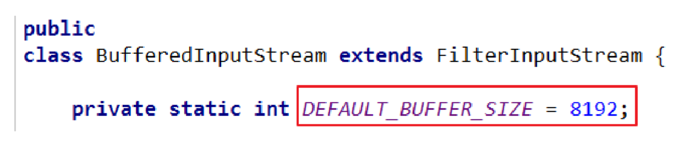

File类的理解
File类的使用
- File类的一个对象，代表一个文件或一个文件目录（俗称：文件夹）
- File类声明在java.io包下
- File涉及到关于文件或文件目录的创建、删除、重命名、修改时间、文件大小等方法
并未涉及到关于写入读取文件内容的操作。如果选哟读取或写入文件内容，必须使用IO来完成 - 后续File类的对象常会作为参数传递到流的构造器中，指明读取或写入的“终点”
File的实例化
常用的构造器
public File(String pathname)
public File(String parentPath, String childPath)
public File(File parentFile, String childPath)
IO流概述
分类
- 按操作数据单位不同分为：字节流(8 bit)，字符流(16 bit)
- 按数据流的流向不同分为：输入流，输出流
- 按流的角色的不同分为：节点流，处理流
图示：
图的体系结构
红框为IO流的四个抽象基类
蓝框为常用类
重点的流
抽象基类 节点流 缓冲流（处理流的一种）
InputStream FileInputStream BufferedInputStream
OutputStream FileOutStream BufferedOutputStream
Reader FileReader BufferedReader
Writer FileWriter BufferedWriter
输入、输出的标准化过程
输入过程
创建相应的输入流，将File类的对象作为参数，传入流的构造器中
具体的读入过程：
创建对应的byte[]或者 char[]
- 关闭流资源
说明：程序中出现的异常用try-catch-finally处理
输出过程
创建File类的对象，指明读取的数据的来源。
创建相应的输出流，将File类的对象作为参数，传入流的构造器中
具体的写出过程：
调用相应的write方法
write(char[]/byte[] buffer, 0 ,len)
- 关闭流资源
说明：程序中出现的异常用try-catch-finally处理
节点流
public void test2() throws IOException {
FileReader fr = null;
try {
// 1.File类的实例化
File file = new File("hello.txt");
// 2.FileReader流的实例化
fr = new FileReader(file);
// 3.读入操作
// read(char[] cbuf)：返回每次读入cbuf数组中的字符的个数。如果打到文件末尾，返回-1
char[] cbuf = new char[5];
int len;
while((len = fr.read(cbuf)) != -1){
// 方式一
// for (int i = 0; i < len; i++) {
// System.out.print(cbuf[i]);
// }
// 方式二
System.out.println(new String(cbuf,0,len));
}
} catch (IOException e) {
e.printStackTrace();
} finally {
fr.close();
}
// 4.资源的关闭
}writer
从内存中写出数据到硬盘的文件里
说明：
- 输出操作，对应的File可以不存在的。
- 如果不存在，在输出过程中自动创建此文件。
如果存在：
false：
对原有文件进行覆盖。
true：
在原有文件进行添加
@Test
public void testFileWriter() throws IOException {
// 1.提供File类的对象，指明写出到的文件
File file = new File("hello1.txt");
// 2.提供FileWriter的对象，用于数据写出
FileWriter f2= new FileWriter(file);
// 3.写出的操作
f2.write("I have a dream".toCharArray());
f2.write("You need to have a dream too");
// 4.流的关闭
f2.close();
}
@Test
public void testFileReaderFileWriter() {
FileReader fr = null;
FileWriter fw = null;
try {
// 1.创建File类的对象，指明读入和写出的文件
File srcFile = new File("hello.txt");
File desFile = new File("hello2.txt");
// 2.创建输入流和输出流的对象
fr = new FileReader(srcFile);
fw = new FileWriter(desFile);
// 3.数据的读入的写出操作
char[] cbuf = new char[5];
int len;
while((len = fr.read(cbuf)) != -1){
// 每次写出len个字符
fw.write(cbuf,0,len);
}
} catch (IOException e) {
e.printStackTrace();
} finally {
// 4.关闭流
try {
fw.close();
} catch (IOException e) {
e.printStackTrace();
}
try {
fr.close();
} catch (IOException e) {
e.printStackTrace();
}
}
}
注意：
IDEA中：
使用单元测试方法，相对路径基于当前的Module
使用main()进行测试，相对路径基于当前的Project
缓冲流
缓冲流涉及的类
BufferedInputStream
BufferedOutputStream
BufferedReader
BufferedWriter
作用
提供流的读取，写入的速度
提供读写速度的原因，提供了一个缓冲区

典型代码
使用BufferedInputStream和BufferedOutputStream
public void BufferedStreamTest() throws IOException {
FileInputStream fis = null;
FileOutputStream fos = null;
BufferedInputStream bis = null;
BufferedOutputStream bos = null;
try {
// 1.造文件
File srcFile = new File("C:\\Users\\Violet\\Desktop\\我是极客\\第3期_高清 720P.mp4");
File desFile = new File("C:\\Users\\Violet\\Desktop\\我是极客\\03.mp4");
// 2.造流
// 2.1 造两个文件流
fis = new FileInputStream(srcFile);
fos = new FileOutputStream(desFile);
// 2.2 造缓冲流
bis = new BufferedInputStream(fis);
bos = new BufferedOutputStream(fos);
// 3.复制的细节：读取、写入
byte[] buffer = new byte[1000];
int len;
while((len = bis.read(buffer)) != -1){
bos.write(buffer,0,len);
}
} catch (IOException e) {
e.printStackTrace();
} finally {
// 4.资源关闭
// 要求：先关闭外层额流，再关闭内存的流
if(bos != null){
bos.close();
}
if(bis != null){
bis.close();
}
// // 说明：我们再关闭外层流的停驶，内层流也会自动的关闭。关于内存流的关闭，我们可以省略。
// fos.close();
// fis.close();
}
}
使用BufferedReader和BufferedWriter
/
使用BufferedReader和BufferedWriter是西安文本文件的复制
/
@Test
public void BufferedReaderWriterTest(){
BufferedReader br = null;
BufferedWriter bw = null;
try {
br = new BufferedReader(new FileReader(new File("hello.txt")));
bw = new BufferedWriter(new FileWriter(new File("hello1.txt")));
// 读写操作
// 方法一
// char[] chuf = new char[5];
// int len;
// while((len = br.read(chuf)) != -1){
// bw.write(chuf,0,len);
// // bw.flush();
// }
// 方法二：使用String
String data;
while((data = br.readLine()) != null){
bw.write(data); // 不包含换行符
bw.newLine(); // 提供换行符
}
} catch (IOException e) {
e.printStackTrace();
} finally {
try {
if(bw!=null) {
bw.close();
}
} catch (IOException e) {
e.printStackTrace();
}
try {
if(br!=null) {
br.close();
}
} catch (IOException e) {
e.printStackTrace();
}
}
}
转换流的使用
转换流涉及到的类
转换流：属于字符类
InputStreamReader：将一个字节的输入流转换为字符的输入流
OutputStreamWriter：将一个字符的输出流转为字节的输出流
作用
提供字节流与字符流之间的转换
解码编码
解码：字节、字节数组 —> 字符数组、字符串
编码: 反过来
说明：
编码决定了解码的形式
图示
典型实现
public void test2(){
InputStreamReader isr = null;
OutputStreamWriter osw = null;
try {
File file = new File("hello.txt");
File file1 = new File("hello1.txt");
FileInputStream fis = new FileInputStream(file);
FileOutputStream fos = new FileOutputStream(file1);
isr = new InputStreamReader(fis);
osw = new OutputStreamWriter(fos);
int len;
char []cbuf = new char[5];
while((len = isr.read(cbuf)) != -1){
osw.write(cbuf,0,len);
}
} catch (IOException e) {
e.printStackTrace();
} finally {
try {
isr.close();
} catch (IOException e) {
e.printStackTrace();
}
try {
osw.close();
} catch (IOException e) {
e.printStackTrace();
}
}
}
说明
文件编码的方式决定了解析时使用的字符集
字符集
常见的编码表
ASCII：美国标准信息交换码。 用一个字节的7位可以表示。
ISO8859-1：拉丁码表。欧洲码表 用一个字节的8位表示。
GB2312：中国的中文编码表。最多两个字节编码所有字符
GBK：中国的中文编码表升级，融合了更多的中文文字符号。最多两个字节编码
Unicode：国际标准码，融合了目前人类使用的所有字符。为每个字符分配唯一的 字符码。所有的文字都用两个字节来表示。
UTF-8：变长的编码方式，可用1-4个字节来表示一个字符。
其他流的使用
标准输入输出流
System.in：标准的输入流、默认从键盘输入
System.out:标准的输出流，默认从控制台输出
修改输入输出i行为
System类的setIn(InputStream is) / setOut(PrintStream)重新指定输入输出的位置
打印流
打印流：printStream、PrintWriter
说明：
提供了一系列重载的print()和println()方法，用于多种数据类型的输出
System.out返回的是PrintStream的实例
数据流
3.1 DataInputStream和DataOutputStream
3.2 作用：用于读取或写出基本数据类型的变量或字符串
@Test
public void test3() throws IOException {
DataOutputStream dos = new DataOutputStream(new FileOutputStream("data.txt"));
dos.writeUTF("violet");
dos.flush();
dos.write(20);
dos.flush();
dos.writeBoolean(true);
dos.flush();
dos.close();
}
/
将文件中存储的基本类型和字符串读取到 字符串中，保存在变量中
注意：处理异常的话，仍然应该使用try-catch-finally
/
@Test
public void test4() throws IOException {
// 1/
DataInputStream dis = new DataInputStream(new FileInputStream("data.txt"));
// 2.
String name = dis.readUTF();
// int age = dis.readInt();
boolean isMale= dis.readBoolean();
System.out.println(name);
// System.out.println(age);
System.out.println(isMale);
dis.close();
}
对象流
ObjectInputStream 和 ObjectOutputStream
作用
ObjectOutputStream：内存中的对象–>存储中的文件、通过网络传输出去
ObjectInputStream：存储中的文件、通过网络接手过来 —> 内存中的对象
对象的序列化机制
对象序列化机制允许把内存中的Java对象转换成平台无关的二进制流，从 而允许把这种二进制流持久地保存在磁盘上，或通过网络将这种二进制流传 输到另一个网络节点。//当其它程序获取了这种二进制流，就可以恢复成原来的Java对象
序列化过程
@Test
public void testObjectOutputStream() {
ObjectOutputStream oss = null;
try {
oss = new ObjectOutputStream(new FileOutputStream("object.dat"));
oss.writeObject(new String("Violet"));
oss.flush();
oss.writeObject(new Person("Violet",20));
oss.flush();
} catch (IOException e) {
e.printStackTrace();
} finally {
try {
if(oss != null)
oss.close();
} catch (IOException e) {
e.printStackTrace();
}
}
}
反序列化
@Test
public void test2(){
ObjectInputStream oss = null;
try {
oss = new ObjectInputStream(new FileInputStream("object.dat"));
Object obj = oss.readObject();
String str = (String)obj;
Person p = (Person)oss.readObject();
System.out.println(str);
System.out.println(p);
} catch (IOException | ClassNotFoundException e) {
e.printStackTrace();
} finally {
try {
if(oss != null)
oss.close();
} catch (IOException e) {
e.printStackTrace();
}
}
}
RadomAccessFile
任意存储文件流
- RandomAccessFile直接继承于java.Object，实现了DataInput和DataOutput
- RandomAccessFile既可以作为一个输入流，又可以作为一个输出流
- 如果RandomAccessFile作为输出流存在，写出的文件如果不存在，则在执行过程中自动创建
如果写出到文件存在，则会对原有内容及逆行覆盖。（默认情况下，从头开始覆盖） - 通过相关的操作，实现RandomAccessFile“插入”数据的结果。 seek(int pos)
典型代码
@Test
public void test1() {
RandomAccessFile raf1 = null;
RandomAccessFile raf2 = null;
try {
raf1 = new RandomAccessFile(new File("01.jpg"),"r");
raf2 = new RandomAccessFile(new File("04.jpg"),"rw");
byte[] buffer = new byte[1024];
int len;
while((len = raf1.read(buffer)) != -1){
raf2.write(buffer,0,len);
}
} catch (IOException e) {
e.printStackTrace();
} finally {
try {
if(raf1 != null)
raf1.close();
} catch (IOException e) {
e.printStackTrace();
}
try {
if(raf2 != null)
raf2.close();
} catch (IOException e) {
e.printStackTrace();
}
}
}
典型代码2
public void test3() throws IOException {
RandomAccessFile raf1 = new RandomAccessFile(new File("hello.txt"),"rw");
raf1.seek(3); // 将指针定位到3
// 保存指针3后面所有的数据到StringBuilder中
StringBuilder builder = new StringBuilder((int) new File("hello.txt").length());
byte[] buffer = new byte[20];
int len;
while((len = raf1.read()) != -1){
builder.append(new String(buffer,0,len));
}
// 调回指针，写入”xyz“
raf1.seek(3);
raf1.write("xyz".getBytes(StandardCharsets.UTF_8));
// 将Build中数据写回
raf1.write(builder.toString().getBytes(StandardCharsets.UTF_8));
raf1.close();
}
NIO
第三方包
使用说明
IO)是从Java 1.4版本开始引入的一套新 的IO API，可以替代标准的Java IO API。NIO与原来的IO有同样的作用和目 的，但是使用的方式完全不同，NIO支持面向缓冲区的(IO是面向流的)、基于通道的IO操作。
NIO将以更加高效的方式进行文件的读写操作。
随着 JDK 7 的发布，Java对NIO进行了极大的扩展，增强了对 文件处理和文件系统特性的支持，以至于我们称他们为 NIO.2。